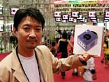
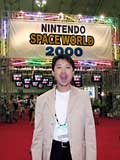
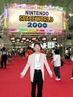

| #11 ニンテンドーゲームキューブ デザイナー インタビュー |
| 任天堂株式会社 総合開発本部 開発部 芦田健一郎さん |
| 今回のSPACEWORLDではニンテンドーゲームキューブの展示はありませんが、会場でハードデザイナーの芦田健一郎さんを見つけたので、デザインのコンセプトを聞いてみました。新しい任天堂を思わせるニンテンドーゲームキューブのデザイン。このコンパクトな立方体は、どんな発想から生まれたのでしょう。 ――本体を正方形にしたのはなぜですか？ 芦田：今回、メディアを８cmのディスクにしました。このサイズをよりポジティブにアピールするにはどうすればいいだろうと考えたんです。もちろん、この形になる前に、横長ですとか、スーパーファミコンに近い形ですとか、さまざまな提案はあったんです。 でも、ディスクのコンパクトなサイズを、デザインへ反映させたい。そこで、上から見たサイズをなるべく小さくするということで今回のような形になりました。ハードに厚みが出たのは、コストを低くして価格を抑えるためです。厚みのあるディスクドライブメカのほうが低コストで作れるんです。そのほか、放熱対策などを考えると、自然に立方体に近くなっていったんですね。 ――とても親しみやすい、シンプルな形ですよね。 芦田：機能的な部分を考えるのと同時に、ハードのコンセプトに合わせたデザインを考えていきました。今回の新ハードのコンセプトは「フレンドリー＆ニュートラル」。つまり、多くの人に受け入れられるハードということです。そこを追求した結果、一番シンプルでゲーム機としては斬新なキューブというスタイルに行きついたんです。  ――コントローラのデザインはいつ決まったんですか。 芦田：本体とほぼ同時期にデザインがスタートしましたが、最後の最後まで検討を続けました。やはり主役はソフトですから、ゲームの方向性が決まらないとコントローラも決まらないんですよね。特長としては、ロクヨンでは３本あったグリップを扱いやすい２本のグリップにしたこと、ロクヨンでは真ん中に置いたアナログスティックを、一番使いやすい左側のメインポジションに置いたこと、右側のボタン群の配置を一新して、Ａボタン・ホームポジションを設定したこと、本格的なＬＲトリガーを採用したことなどがあげられます。アナログスティックを左側に置いたのは、すでにアナログスティックを使ったゲームが主流になったからです。 |
| ――本体デザインでこだわったところはありますか。 芦田：今回は本当にデザインにこだわって、パーツごとに無数のスケッチを描きました。例えば、前面のデザインは、２つのコネクタが目、デジカードスロットが口に見えて、ちょうど顔が２つあるのように見えますよね。そこでなるべく変な顔に見えないように何回もデザインしなおしたんですよ。 前回のロクヨンのデザインは全てにおいて挑戦的、革新的であることをテーマにデザインしました。しかし、今回はフレンドリーというテーマを徹底しておし進めていきました。ハンドルが付いているのもその表れです。テレビのそばにあった本体を、ハンドルをもってひょいっと手元においてプレイする。そんな気軽な使い方ができる、デザインの演出のひとつなんです。また、ディスクドライブの中央にボタンをつけて、小さいお子さんでもワンプッシュでディスクを取り出せるようにしています。扱いやすさへのこだわりはこんな小さなところにもあるのですよ。 ――最後にユーザーの皆様へのメッセージをお聞かせください。 芦田：今回は本体の形がハードの名前につながっていきました。この「ゲームの立方体」から新しい遊びが沢山できますので、どうかご期待ください。 |
|
|